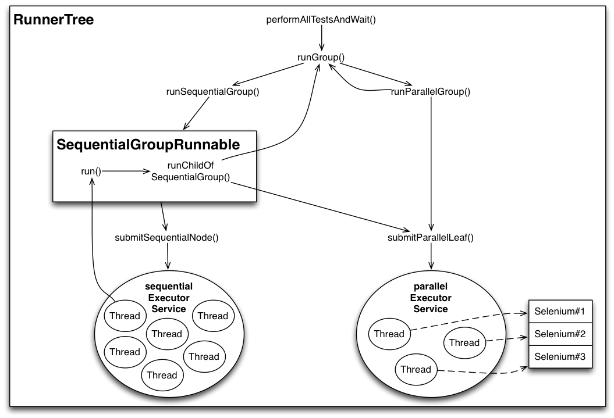
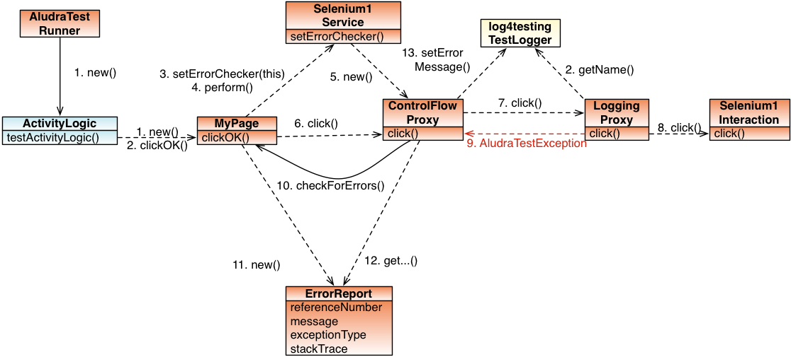

AludraTest Developer Guide
This document describes the internal concepts of the framework and is intended for developers that maintain and evolve the AludraTest Framework. Test coders do not need to know this for their work and should refer to the User Guide.
Purpose
AludraTest is a Framework for
- defining and
- executing tests and test suites
- with detailed control of test concurrency' and
- highly detailed and yet clear test report generation
- supporting technical extensions for testing systems of arbitrary type

Stakeholders
Test Manager
The manager in charge for testing the System (Application) Under Test (SUT). He manages the Functional Testers and Test Programmers.
Requirements:
- Low maintenance effort for test code
- Efficient use of the framework by programmers and testers
Functional Tester
The tester which requests test implementation from the Test programmer, performs the tests, evaluates test reports and tracks bugs.
Requirements:
- Fast test execution
- Easy error analysis
Test Automation Engineer (Test Programmer)
The programmer which receives test implementation requests from the Functional Tester. He implements the test code using features of the AludraTest Framework and, if necessary, requests additional ones. The User Guide was written from him.
Requirements:
- Ease of implementation
- No need of subcomponent knowledge
- Framework should prevent him from making faults
Framework Developer
The programmer that maintains and evolves the AludraTest framework. This guide was made for him.
Requirements:
- Ease of maintenance
- Separation of concerns

Architecture
Main Components
AludraTest consists of the following main component types:
- A platform core which provides all functionality for defining, executing and reporting tests
- Execution extensions which provide means to perform test execution from the command line and the JUnit unit testing framework
- Services which contain service provider interfaces for interacting with a system under test (e.g. a web GUI, database, JMS, ...)
- Content handlers
The core components are as follows and will be explained in detail later:
- config: Parses the AludraTest configuration files and provides their settings to the framework
- suite:
- scheduler: Parses test suites and concurrency information, and combines them in a tree structure. Executes the tests from the tree obeying the configured concurrency requirements
- content: Provides general data/document-based validation features to the test classes
- service: Declares service provider interfaces for platform extensions and manages the services' life cycle
- log4testing: Monitors and logs test execution
- invoker: Defines a service provider interface for executing tests and provides an implementation for AludraTest's default test class mechanism
- data: Defines a service provider interface for test data provision and provides a default implementation.
TODO Update image

Configuration Engine (org.aludratest.config)
AludraTest contains a dynamic configuration engine which defines several configuration scopes. Please refer to Service Configuration for details on how the configuration can be used.
The core interfaces are Configurable and Preferences. Configurable is the interface to be implemented by each
object wanting to be configured using the configuration mechanism described at Service Configuration. Preferences is the API to access the configuration stored for the component wanting to be configured.
The core, or entry class performing the configuration for a given object is ComponentConfigurator. It provides some public static methods to configure a given configurable object.
Additional annotations are available to document the potential configuration parameters for objects of a given type. These annotations can be added to classes and interfaces, and documentation can be automatically generated out of them. Additionally, the default values for a configurable object are read from the annotations at run-time (if present). The core annotations are ConfigProperty and ConfigNodeProperty. To be able to use more than one of these for a class, you can combine multiple of these annotations with the helper annotations ConfigProperties and ConfigNodeProperties.
InternalComponent is another annotation, marking interfaces as AludraTest internal. This is more a descriptive interface, but it can also control if a given component interface (or, its implementing class) should only be implemented once at run-time (Singleton).
Finally, AludraTestConfig is such an internal component interface, providing the configuration of AludraTest. Its implementation is populated with the configuration read from aludratest.properties (see User Guide for details).
Config Internals
As soon as an object is looked up via the internal IoC container (Plexus; see Service_Lookup) which implements the Configurable interface, a Configurator is looked up from the IoC container. The default implementation is DefaultConfigurator. It will perform the following tasks:
- Parse the annotations of the class and the implemented interface(s) to find default values for configuration
- Call
fillDefaults()to get additional (dynamic) default values - Call
getPropertiesBaseName()to get the base Properties name for the object - Create a
PropertyPriorityPreferencesobject which cares about the different configuration scopes and their subsitution machansism - Pass this object to
configure(). Every invocation on this object now will retrieve the correct value.
The instance name of the Configurable is taken from the Plexus Role hint, if any is set. Setting this is performed in AludraServiceManager.
Scheduler (org.aludratest.scheduler)
Test suites and test cases form a hierarchical (tree) structure. A test case tree consists of different types of nodes:
- leaf nodes which map to atomic test cases and represent a single test method invocation with a single set of parameters
- parent nodes which combine 'child' nodes into a group, thus representing a test suite.
Since a test method can be called several times with different parameters, AludraTest considers a test method a suite and an single method invocation as atomic test case.
The class org.aludratest.scheduler.AludraSuiteParser is the main entry point for parsing a given Suite or Test class, and creating the described tree structure for execution.
All pending tests are combined into a tree structure based on class org.aludratest.scheduler.RunnerTree. The tree consists of different types of nodes (represented by child classes of a common parent class org.aludratest.scheduler.node.RunnerNode):
- Parent nodes: Tree nodes which combine other nodes, named Child nodes. A parent node represents a test suite, combining test cases and/or test suites. They are represented by the class org.aludratest.scheduler.node.RunnerGroup.
- Leaf nodes: tree nodes which cannot have child nodes. Each leaf node represents an atomic test case. They are represented by the class org.aludratest.scheduler.node.RunnerLeaf.
The base test suite class is mapped to the root node of the tree.
The tree node classes form a Composite Pattern with RunnerNode being the component, RunnerNode the leaf and RunnerGroup the composite.
Since a test class method can be called several times, Java class elements map to nodes as follows:
suite class -> parent node test class -> parent node test method -> parent node test invocation (or parameter set) -> leaf node
Any element which has a concurrency annotation propagates this configuration as default to all sub elements. If a sub element should be executed with different concurrency settings, then it has to be annotated accordingly.
Java's Executor mechanism
RunnerTree uses Java’s ExecutorService mechanism for scheduling and executing Runnables which invoke the test cases. So let’s first have a look at its basics. The core concept is the idea of having an abstract service definition (ExecutorService) for executing tasks (Runnable or Callable) asynchronously and getting an object handle (Future) to query execution status, fetch execution results, wait for termination or cancel execution.
For more information on Java's ExecutorService and the associated concepts, please see e.g. http://tutorials.jenkov.com/java-util-concurrent/executorservice.html.
Tree execution
The RunnerTree class makes use of two thread pools for controlling execution:
- A fixed-size thread pool for concurrent execution of atomic tests (parallelExecutorService)
- A dynamically growing thread pool for sequential controller (group) tasks (sequentialExecutorService)
In RunnerTree’s constructor, the parallelExecutorService is initialized as a thread pool of fixed size, its size is set to the number of Threads configured for AludraTest. So the parallelExecutorService is an easy way of scheduling all threads that may run consequentially while limiting their concurrency to the size of the testing host machine.
The sequentialExecutorService is a pool which may become arbitrarily large and serves for executing sequential groups (represented by SequentialGroupRunnable objects). While being executed in the sequentialExecutorService, each sequential group consecutively adds sub elements to the execution flow and waits until they are finished. Here is an overview of RunnerTree’s execution flow:

The ExecutorServices are initialized as follows:
public RunnerTree(int parallelThreadPoolSize, ...) {
...
this.parallelExecutorService = Executors.newFixedThreadPool(
parallelThreadPoolSize, new PoolThreadFactory("ParEx"));
this.parallelTasks = new LinkedList<Future<Void>>();
this.sequentialExecutorService = Executors.newCachedThreadPool(new PoolThreadFactory("SerEx"));
this.sequentialTasks = new LinkedList<Future<Void>>();
}
Tree execution is started when the run() method is called:
public void performAllTestsAndWait() {
runGroup(root);
waitForCompletion();
}
Evidently it is a good choice to apply recursive invocation for executing a tree's child nodes:
private List<Future<Void>> runGroup(RunnerGroup group) {
if (group.isParallel())
return runParallelGroup(group);
else
return runSequentialGroup(group);
}
Let's first examine how to execute tests concurrently:
private List<Future<Void>> runParallelGroup(RunnerGroup group) {
ArrayList<Future<Void>> futures = new ArrayList<Future<Void>>();
for (RunnerNode childNode group.getChildren()) {
if (childNode instanceof RunnerGroup)
futures.addAll(runGroup((RunnerGroup) childNode));
else if (childNode instanceof RunnerLeaf)
futures.add(submitParallelLeaf((RunnerLeaf) childNode));
...
}
return futures;
}
When executing a parallel group, each child node is iterated: Child groups are executed by recurring to the runGroup() method above, child leafs are submitted to the parallel thread pool calling submitParallelLeaf() and stored in the parallelTasks list:
private Future<Void> submitParallelLeaf(final RunnerLeaf leaf) {
Future<Void> future = parallelCompletionService.submit(leaf, null);
parallelTasks.offer(future);
return future;
}
That was plain and simple. Now for the sequential groups: Special care must be taken that a sequential group may contain parallel groups and has to assure that all contained parallel sub tasks are finished before the next sequential node is executed:
private List<Future<Void>> runSequentialGroup(RunnerGroup group) {
ArrayList<Future<Void>> futures = new ArrayList<Future<Void>>();
Runnable groupRunnable = new SequentialGroupRunnable(group);
Future<Void> future = submitSequentialNode(groupRunnable);
futures.add(future);
sequentialTasks.add(future);
return futures;
}
A SequentialGroupRunnable wraps the code for executing a sequential groups child nodes sequentially.
Note: This group must not be sent to the parallel thread pool, since that one is intended to run the atomic tests. Remember that the number of threads in this pool equals the number of Threads set for AludraTest. So using one of these threads for something else but executing an atomic test would leave one test Thread idle! This is why there is a distinct pool for sequential tasks, to which the SequentialGroupRunnable is submitted by submitSequentialNode(). In addition it is stored in the sequentialTasks list to access execution status.
The submitSequentialNode() method is as primitive as it can be:
private Future<Void> submitSequentialNode(Runnable runnable) {
return sequentialExecutorService.submit(runnable, null);
}
The SequentialGroupRunnable holds the execution logic:
public class SequentialGroupRunnable implements Runnable {
private RunnerGroup group;
...
public void run() {
...
for (RunnerNode childNode group.getChildren()) {
if (childNode instanceof RunnerGroup) {
// run all child groups...
List<Future<Void>> futures = runGroup((RunnerGroup) childNode);
// ...and wait until each one has completed
for (Future<Void> future futures) {
future.get();
}
} else if (childNode instanceof RunnerLeaf) {
// send the leaf to a thread of the parallel pool...
Future<Void> future = submitParallelLeaf((RunnerLeaf) childNode);
// ...and wait until it is finished
future.get();
}
...
}
...
}
...
}
In the run() method it iterates through the child nodes:
- For a child group, it recurs to runGroup() and waits until all nodes of this group have been executed calling future.get() for each related task.
- For a child leaf it calls submitParallelLeaf() and waits for it to finish using future.get(). Note that calling sumbitParallelLeaf() is not a bug, since the parallel thread pool holds the only threads intended to run the atomic tests!
After all tests have been scheduled, the run() methods waits for them to finish by calling the method waitForCompletion():
private void waitForCompletion() {
try {
while (!sequentialTasks.isEmpty()) {
waitForCompletionAndRemoveFromQueue(sequentialTasks.getLast(), sequentialTasks);
}
while (!parallelTasks.isEmpty()) {
waitForCompletionAndRemoveFromQueue(parallelTasks.getFirst(), parallelTasks);
}
...
} catch (InterruptedException e) {
Thread.currentThread().interrupt();
} finally {
...
cancelAll(parallelTasks);
cancelAll(sequentialTasks);
shutDown(parallelExecutorService);
shutDown(sequentialExecutorService);
}
}
First it waits until all sequential and parallel tasks have completed. In case a critical error has occurred, the 'finally' clause takes care of cancel()ling all tasks before shutting down the thread pools. The respective methods are implemented as follows:
private void waitForCompletionAndRemoveFromQueue(Future<Void> task, LinkedList<Future<Void>> queue) throws InterruptedException {
...
try {
task.get();
} catch (ExecutionException e) {
LOGGER.error("Error executing sequential task", e);
}
synchronized (queue) {
...
queue.remove(task);
}
}
private void cancelAll(LinkedList<Future<Void>> queue) {
...
while (!queue.isEmpty()) {
synchronized (queue) {
if (!queue.isEmpty()) {
Future<Void> task = queue.poll();
...
task.cancel(true);
}
}
}
}
private void shutDown(ExecutorService executor) {
... executor.shutdownNow();
}
Service Management
Service Scope & Life Cycle
Test classes inherit service access features from their parent class AludraTestCase.
The intended scope of a service is a method invocation, which means a single, atomic test case. Test code gets access to a service by requesting it calling getService(ComponentId). The component ID is a wrapper for an interface class and an instance name, the latter used for using and addressing different configuration sets for the same service type.
All services requested in a test method are closed by the framework when the method has ended. If a test method needs to access the same service several times in a different manner (e.g. with actions of two different users), it may close the service explicitly, calling the inherited method closeService(ComponentId).

Service Lookup
Services are managed by the class AludraServiceManager. The class ComponentId defines the identity of a requested service object (instance) and is used by the class AludraTestContext as key in a map structure that stores the services as map values.
When a test requests a service, the implementation of getService() first searches it in the internal map of the test context. If it is found there, it is reused and provided to the caller.
If it is not found, the service is created, configured, wrapped with a proxy (explained later), put into the map and returned.
To find the implementing class for a given service interface, the AludraServiceManager uses the aludraservice.properties based configuration. Due to the dynamic configuration infrastructure, you can also override the implementing class set for a given service interface using System Properties:
System.setProperty("ALUDRATEST_CONFIG/aludraservice/FileService.class", MyFileServiceImpl.class.getName());
Please note that internally the Plexus IoC container is used for component lookup and instantiation. This container is configured by the AludraServiceManager class, which means that once a service has been looked up, further modifications of the System properties as shown above will have no effect.
Service Requirements
As Plexus is used for component and service lookup, services can make use of the Plexus @Requirement annotation to easily retrieve other components of AludraTest. If a service needs access to the AludraTest configuration, for example, it can declare a private field this way:
@Requirement private AludraTestConfig aludraConfig;
That's all! During lookup, this field is injected with the concrete AludraTestConfig implementation and can be used in all methods of the class (with the exception of the constructor!).
For now, Requirements are always configured with the global configuration for the component / service interface (the current Instance Name of the service containing the Requirement is ignored), so best would be to just lookup Components this way (not services).
Services still can ask their Service Context object for other services and components; these are configured for the current Instance Name of the service object.
Service Operations
Each service provides operations of different type indirectly through three Action interfaces:
- Interaction
- Operations which usually interact with a system as a user or a client system would do
- Verification
- Verification operations of which the result values shall be logged
- Condition
- Checking operations which are executed without logging
Each service declares and implements specific child interfaces of these. For example, a SwingGUI service (which would be named SwingGUIService) could declare an interface SwingGUIInteraction with a typeKey(char) method. A client would access it calling:
ComponentId<SwingGUIService> serviceId = ComponentId.create(SwingGUIService.class);
SwingGUIService gui = getService(serviceId);
gui.perform().typeKey('c');
gui.perform().typeKey('x');
Exceptions
All exceptions thrown in AludraTest inherit from AludraTestException, which is an unchecked exception (inheriting from RuntimeException).
File:AludraTest-Exceptions.png
{kind=link}
See Log4Testing User Guide for more information on the different exception types and their effects.
Service Proxy Injection
There is common functionality applicable to services in an orthogonal manner to the service semantics. It is injected wrapping the Action objects with specific proxies:
- Control Flow Proxy
- Logging Proxy

Since the Action objects are retrieved by invoking the associated service, the service has the responsibility of creating the Action proxies. Since this is generic functionality, it can also be injected by a proxy.
Java Dynamic Proxy API
The Java runtime provides a utility to create classes dynamically and instantiate them, making them implement a list of given interfaces: The class java.lang.reflect.Proxy with its static method newProxyInstance(). The actual code to be executed must be provided by the caller by an implementation of the interface java.lang.reflect.InvocationHandler.
In AludraTest, this feature is implemented in the method AludraTestUtil.wrapWithInvocationHandler():
public static <T, U extends T> U wrapWithInvocationHandler(Class<T> interfaceType, InvocationHandler invocationHandler) {
...
ClassLoader classLoader = Thread.currentThread().getContextClassLoader();
return (U) Proxy.newProxyInstance(classLoader, new Class [] { interfaceType }, invocationHandler);
...
}
Transparent Service Logging
Logging of service invocations is performed by the class LoggingInvocationHandler which is used by a dynamically generated proxy to perform transparent logging on each Action method invocation. In order to do so, it holds a reference to the current Log4testing Test Case Log as the target of logging operations and to the real service implementor which has to perform the logic requested by the caller.
The proxy that was created by the Dynamic Proxy API forwards each call to its InvocationHandler's invoke() method. There the real Action object is invoked calling method.invoke and execution results are logged.
If the called method returns normally and was no Condition method, then its return value is logged. If an exception occured, it is logged in any case and rethrown in order to propagate it to the caller. Note that the original exception is usually wrapped with an InvocationTargetException, so it is unpacked in order to assure proper exception type mapping.
Annotations can control the logging of method parameters etc. One of these Annotations is, for example, the TechnicalLocator. A method parameter can be annotated to indicate that its value shall be logged as "technical locator" (which is a special column in the Log4testing log). Non-annotated arguments are logged as "usedParameters".
Control Flow
AludraTest's control flow facility provides the following features to handle exceptions:
- If the ControlFlowHandler is configured to cancel execution, then all subsequent Action method calls are swallowed and logged as IGNORED
- If a SystemConnector has been provided by the service, then it is queried for errors that may have happened aside the main control flow (to analyse inherited errors) and its error information is logged.
The ControlFlowHandler implementation checks if test case exceution has been cancelled before. If yes, the requested Action method is logged as IGNORED and swallowed, if no, it is executed in the forward() method:
public Object invoke(Object proxy, Method method, Object[] args) throws Throwable {
if (!shallContinueTestCaseExecution(method)) {
LogUtil.log(testCase, method, TestStatus.IGNORED, null, args);
return AludraTestUtil.nullOrPrimitiveDefault(method.getReturnType());
} else {
return forward(method, args);
}
}
The forward() method executes the requested method and returns its return value. If it encounters an exception and a SystemConnector was set, the handler requests error information and logs it. If the handler is configured to stop test case execution on exceptions (stopOnException == true), then it calls FlowController.stopTestCaseExecution() to do so.
TODO update image 
Putting the proxies together
As shown above, the proxies' InvocationHandlers need configuration provided in their constructors. Since the information is generic, it can be managed uniformly, independent of the specific used Action super interface. This is what the InvocationHandler AludraServiceProxyHandler is for. It is used by a dynamic proxy which wraps an AludraService object and holds the log4testing TestCase Log.
The invoke() method forwards all calls to the real service object but has a special handling of the methods setErrorChecker(), perform(), verify() and check().
On calls to the methods perform(), verify() and check(), the resulting objects are wrapped with a logging proxy and a control flow proxy working as described above.
Handling unstable Services (auto-retry mechanism)
AludraTest provides a mechanism for handling unstable services by automatically retrying failed operations a limited number of times. The conditions under which to retry an operation are specified by a combination of
- Service interface class
- Service method
- Exception class
When such a condition is encountered, the ControlFlowHandler catches the exception, declares the erred TestStep as ignored and retries. Thus, when using a maximum of 2 repetitions the HTML report created by log4testing bears two gray entries (ignored TestSteps) of the method invocation and one colored as failure, e.g. blue (inconclusive TestStep).
The configuration of this auto-retry mechanism is done in a file retry.xml:
<retries>
<retry>
<maxCount>2</maxCount>
<exception>org.aludratest.exception.PerformanceFailure</exception>
<interface>org.aludratest.service.gui.web.WebGUIInteraction</interface>
<method>open</method>
</retry>
...
</retries>
- maxCount
- The maximum number of times an operation is retried after having failed. Thus the maximum number of invocations is maxCount + 1.
- exception
- The exception type that signals the error. The class specified here matches all child classes. Thus, java.lang.Throwable matches any exception.
- interface
- The interface onwhich the exception occured. The interface specified here matches all child interfaces and classes. As an example, org.aludratest.service.gui.web.AludraWebGUI matches org.aludratest.service.gui.web.selenium1.AludraSelenium1 as well as org.aludratest.service.gui.web.selenium2.AludraSelenium2.
- method
- The name of the method on which the exception occured. If the interface has several methods with the same name and different signatures, any of them is matched.
Special Topics
Enabling Selenium Unit Tests
Since the Continous Integration server does not provide a browser which we can make use of (headless mode), the execution of Selenium Unit tests is disabled by default. Due to JUnit conventions, the disabled tests are reported as being successful.
Nevertheless the Selenium tests must be executed on the developer's computer before pushing them to the Git repository. This is enabled by creating an empty file src/test/resources/performLocalTests, or by activating a system property performLocalTests:
mvn clean verify -DperformLocalTests=true
The code which causes this behaviour is located in org.aludratest.LocalTestCase (in src/test/java source folder).